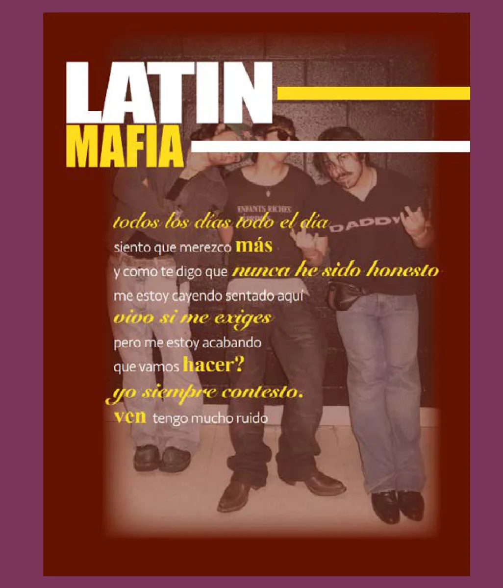
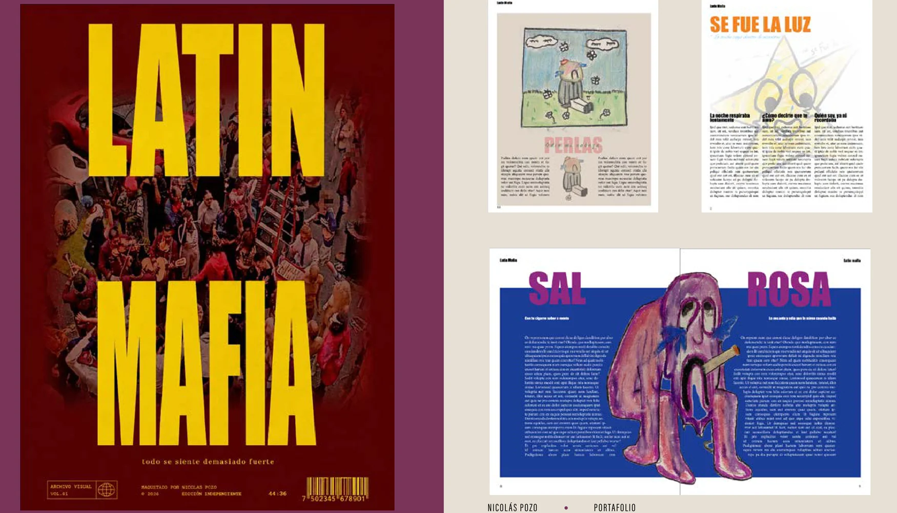

Latin Mafia editorial.
Experimentación con ritmo tipográfico, composición y cultura musical.

La idea detrás
del proyecto.
Ejercicio de maquetación editorial inspirado en la estética del grupo Latin Mafia. Explora el tratamiento tipográfico, la jerarquía de información y la relación entre texto e imagen. Proyecto académico no oficial y sin afiliación con el grupo musical.
Proyecto incluido en el portafolio de Nicolás Pozo.
← Regresar a proyectos- Categoría
- Diseño editorial
- Año
- 2026
- Herramientas / recursos
- Illustrator · Photoshop · InDesign
- Participación
- Diseño de portada, maquetación y exploración editorial.
VISTAS DEL PROYECTO
Más de cerca.
